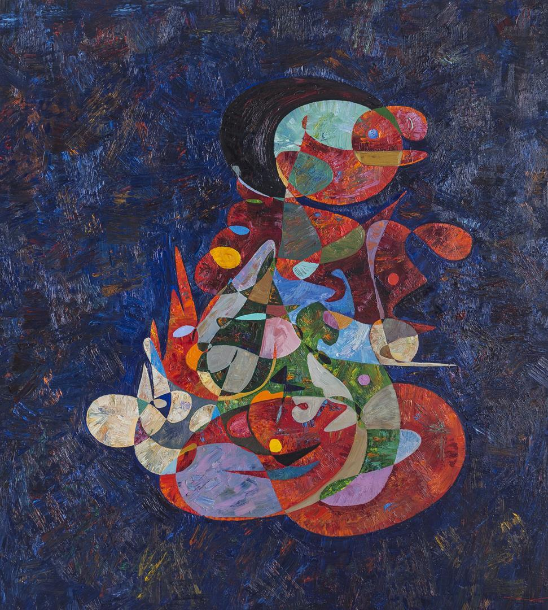
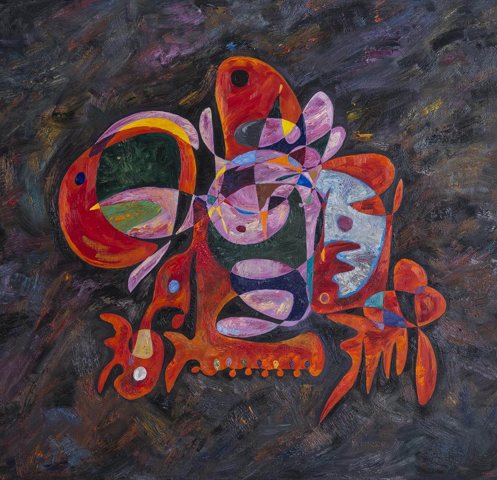

Featured Artworks

"Abandoned" depicts the conflict between sorrow and fleeting optimism. The piece inspires thoughts of loneliness and desire with its predominantly blue and black palette, highlighted with brilliant but restrained orange and yellow. The dominant figure, deformed and ugly, represents the sorrow of abandonment, contrasted with the delicate promise of rejuvenation. Virtosu's trademark impasto technique adds texture and depth, resulting in a dynamic interplay of color and emotion that reflects his profound investigation of human frailty.

"ABBA" is an evocative celebration of color and shape, combining dissonance and melody in a symphony of painterly abstraction. Vîrtosu's painstaking layering of drips, smears, and strokes creates a dynamic tension between past traditions and potential futures. The vibrant colors and chaotic yet balanced composition highlight his ability to combine instinct with technique. This 2015 piece captures the essence of his original exploration, redefining the boundaries of figure and media to create a hallucinogenic and stimulating visual experience.

"2000 Camp David Summit" depicts the emotional turbulence of a historic negotiation, combining hope, frustration, and conflict. Virtosu's powerful composition of dark blues, purples, and brilliant accents portrays the event's stress and unresolved character. The painting's broken and uneven patterns suggest a tumultuous interplay of expectations and disappointments, evoking Mesoamerican themes of struggle and survival. This stunning piece explores the ongoing intricacy of political discourse as well as the human emotions that are inextricably linked to history.